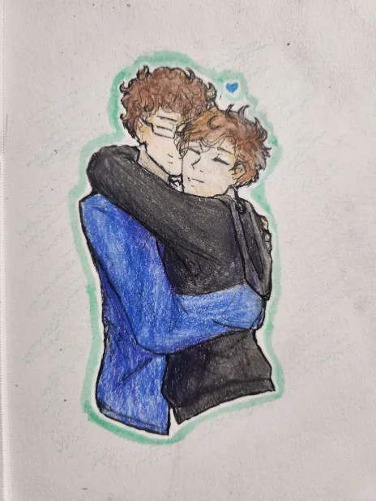

With this website, I want to express how much I care about my partner.

Here's a picture that he drew of us just after Valentine's Day last year.
It's one of my favorite artworks he's done of us, and I use it as the
picture for most websites I frequently use.
This Valentine's Day, I want to get him a gift. I'm not sure what he'll
like the most, but a few things are running through my mind:
A new mouse
The current mouse he's using hasn't been working well
A game on Steam
I've been trying to get him a game called "Lethal Company" since it's on
sale, but he hasn't accepted it yet
Quality time together
Both of us are college students with little-to-no income, so getting him
something might not be entirely realistic. Spending time with the people
you love, especially if they're not doing well, can mean a lot
If we spend quality time together, we may end up watching a movie (or
two). I don't know exactly which one we'd watch, since neither of us
really care for romance movies, but these are some ideas we might put on:
Valentine (2001), Rated R. Five women are stalked by an unknown
assailant while preparing for Valentine's Day.
Hitch (2005), Rated PG-13. A smooth-talking man falls for a hardened
columnist while helping a shy accountant woo a beautiful heiress.
Click (2006), Rated PG-13. A workaholic architect finds a universal
remote that allows him to fast-forward and rewind to different parts of
his life. Complications arise when the remote starts to overrule his
choices.
...that last one might not be a valentine's themed movie, but it would be
fun to watch.
We met in the discord server of a musician/DJ (Voia) that we both enjoy.
Here is his favorite song from that artist.